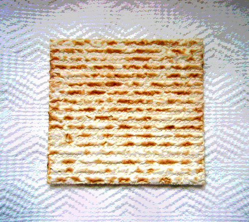
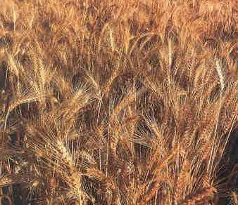

Święto Przaśników
„Przez siedem dni jeść będziecie przaśniki. Już pierwszego dnia usuniecie kwas z domów waszych, bo każdy, kto od pierwszego do siódmego dnia jeść będzie to, co kwaszone, usunięty będzie z Izraela; pierwszego dnia i siódmego dnia będzie u was święte zgromadzenie, w tych dniach nie wolno wykonywać żadnej pracy. Tylko to, co każdy potrzebuje do jedzenia, wolno wam przygotować. Przestrzegajcie Święta Przaśników, gdyż w tym właśnie dniu wyprowadziłem zastępy wasze z ziemi egipskiej. Przestrzegajcie tego święta przez wszystkie pokolenia jako ustanowienie wieczne.” (2 Mojż. 12:15-17, BW)
Przez kolejne 7 dni po Święcie Paschy, spożywa się wyłącznie niekwaszony chleb (macę).

Zarówno maca jak i chamec – to chleb. Jednak jeden jest niekwaszony a drugi kwaszony. Podobieństwo wskazuje, jak zło lubi czasem udawać dobro. Proces fermentacji symbolizuje skutki grzechu, bowiem odrobina zakwasu przenosi się na całe ciasto, które bardzo szybko rośnie.
Tak człowiek w niewyobrażalnie szybkim tempie może stać się niewolnikiem grzechu. Jedzenie w to święto macy, czyli czystego, nie skażonego kwasem chleba, jest deklaracją życia w duchowej czystości oraz kontrolowania wszelkich żądz i pokus. Człowiek taki, będąc ‘przaśnym chlebem’, jest wolny od wpływów czynników chcących wchłonąć go do skażonego świata. Poza tym obrazuje to naszą przyszłą nieskażoną naturę (1 Kor. 15:42) na podobieństwo naszego Zbawiciela (Filip. 3:21). Jako, że nie jesteśmy jeszcze właścicielami przemienionych, nieskażonych ciał i w tym przypadku uwypuklona jest tu prorocza wymowa Święta Przaśników.
„(7) Wyrzućcie więc stary kwas, abyście się stali nowym ciastem, jako że przaśni jesteście. Chrystus bowiem został złożony w ofierze jako nasza Pascha. (8) Tak przeto odprawiajmy święto nasze, nie przy użyciu starego kwasu, kwasu złości i przewrotności, lecz - przaśnego chleba czystości i prawdy.” (1 Kor. 5:7-9, BT)
Zwróćmy uwagę na werset 8, w którym Apostoł Paweł w nawiązaniu do Święta Przaśników mówi: „przeto odprawiajmy święto nasze”. Te dni miały przypominać ówczesnym chrześcijanom, iż mają oni być ‘przaśni’, pozbawieni złego kwasu, czyli złości i przewrotności. Czyżby, tych którzy dziś uważają, iż „Święto Przaśników” jest nieaktualne to już nie dotyczyło?
Kiedy te lub inne biblijne święta zostały zniesione, skoro nie zniósł ich ani Jezus, ani apostołowie, ani pierwsi chrześcijanie, którzy również je obchodzili?
„My zaś odpłynęliśmy z Filippi po święcie Przaśników i w pięć dni przybyliśmy do nich do Troady, gdzie spędziliśmy siedem dni.” (Dzieje 20:6, BW).
Nie przypadkiem biblijne święta religijne są ściśle powiązane z okresem wegetacyjnym, każdorazowo będąc zwieńczeniem pewnego etapu zbioru plonów. Poszczególne cykle tych zbiorów obrazują pewne etapy w dziejach ludzkości, a ich powiązanie z poszczególnymi świętami biblijnymi pozwala odkryć zdumiewający Boski Plan naszego zbawienia, co zostanie wykazane przy omawianiu poszczególnych świąt.
Jakże więc można zaniechać obchodzenia świąt o tak głębokiej wymowie? Ci którzy uważają, iż są to święta żydowskie, które nie mają nic wspólnego z chrześcijaństwem, świadomie zubożają swój duchowy wzrost. Owszem do pewnego czasu były to święta żydowskie, ale tylko dlatego, że Pismo Święte było księgą przeznaczoną wyłącznie dla Żydów. Teraz, kiedy Bóg w swoim miłosierdziu pozwolił, aby Biblia, łącznie z Ewangelią została odsłonięta również poganom (Efez. 2:11-12), jest czas aby korzystać z pielęgnowanego poprzez długie wieki przez Żydów dziedzictwa duchowego, pochodzącego z Pisma Świętego, łącznie ze świętami, które ono przedstawia. Tym bardziej, że święta owe wskazują na rolę Jezusa w tym Bożym Planie.
„Wszystko, co znajduje się od dawna w Piśmie [Świętym], zostało napisane ku naszej nauce, abyśmy mogli mieć niezachwianą nadzieję i płynącą z Pism moc ducha.” (Rzym. 15:4, BW-P)
1. Święto Paschy i Święto Przaśników (3 Mojż. 23:5-6) – wieńczące pierwsze żniwa w roku. Zbiera się wtedy jęczmień (3 Mojż. 23:10-15).
2. Święto Pięćdziesiątnicy, Święto Żniw (Szawuot) – przypadające pięćdziesiąt dni po Święcie Paschy. Przypada wówczas czas kolejnego żniwa – tym razem pszenicy (2 Mojż. 23:16, 34:22).
3. Święto Zbioru plonów to ostatni w roku zbiór pozostałych plonów (2 Mojż. 23:16, 34:22).
Święto Pesach łącznie ze Świętem Prześników, nazywane jest Hag Ha-Macot. Miesiąc Nisan, w którym przypada Święto Paschy jest nazywany w Biblii także miesiącem Awiw (Abib) (2 Mojż. 13:4, 23:15, 34:18), albo miesiącem Kłosów (5 Mojż. 16:1). Jest to pierwszy miesiąc kalendarza religijnego Żydów.
Hebrajskie słowo ‘awiw’ to ‘wiosna’. Czas, kiedy wszystko odradza się do życia i kiedy rozpoczyna się okres wegetacyjny, a pierwszym w roku żniwem jest jęczmień.

Nakazem religijnym było przyniesienie w Święto Przaśników pierwocin z tych pierwszych plonów żniw jęczmiennych (3 Mojż. 23:9-16). Nie można było spożywać niczego z nowych plonów dopóki ich pierwociny nie zostały ofiarowane Bogu (3 Mojż. 23:14).
Z czym się to kojarzy?
„Pan stworzył mnie jako pierwociny swojego stworzenia, na początku swych dzieł, z dawna.” (Przysł. 8:22, BW)
„A jednak Chrystus został wzbudzony z martwych i jest pierwiastkiem tych, którzy zasnęli.” (1 Kor. 15:20, BW)
Jak żadne inne plony nie wyprzedzą jęczmienia – pierwocin wszystkich żniw, tak nikt w zmartwychwstaniu nie wyprzedził Jezusa (1 Kor. 5:20). Dopóki zmartwychwstały Jezus nie wstąpił pierwszy do niebios tak nikt wcześniej przed nim się tam nie znalazł (Jana 3:13).
Zmartwychwstanie naszego Pana jest niczym zapowiedź wiosny dla ludzkości – koniec zimy to koniec śmierci, teraz wszystko będzie budzić się do życia. On jest tym który toruje drogę pozostałym plonom (1 Kor. 5:22-23).

Święto Paschy i Przaśników w Starym Testamencie:
2 Mojż. 12:2-25, 42-49
2 Mojż. 34:25
3 Mojż. 23:5-8
4 Mojż. 28:16-18
5 Mojż. 16:1-8
Joz. 5:10-12
2 Król. 23:21-23
2 Kron. 30:13, 15-27
2 Kron. 35:1-19
Ezdr. 6:19-21
Ezech.45:21
Święto Paschy i Przaśników w Nowym Testamencie:
Mat. 26:2, 17
Marka 14:1, 12, 14, 16
Łuk. 22:1, 7-8, 13, 15
Jana 2:13, 6:4, 11:55, 18:28
Dzieje 12:3, 20:6
Książka
MISZKAN
Pierwszy Boży Przybytek

Święto przaśników
Gdyby poznać dokładnie jak Święto przaśników jest obchodzone po dzień dzisiejszy przez żydów od razu widać że święto to jest jakby proroctwem śmierci Pana Jezusa na krzyżu. Do szerszego objaśnienia podam na dole ciekawy film który polecam obejrzeć.
Czy w Nowym Testamencie jest zakaz spożywania rzeczy nieczystych bo taki zakaz jest w starym testamęcie??
Rzymian 14: 20 Nie burz dzieła Bożego ze względu na pokarmy! Wprawdzie każda rzecz jest czysta, stałaby się jednak zła, jeśliby człowiek spożywając ją, dawał przez to zgorszenie. 21 Dobrą jest rzeczą nie jeść mięsa i nie pić wina, i nie czynić niczego, co twego brata razi .
Czyżby ten werset mówił nam że możemy jeść nieczyste? Nie. Nie możemy jeść nieczystych, ale Bóg oczyścił jedzeni, lecz jeśli by nam sumienie obarczało winą tedy jeść nie możemy.
Powiedz mi gdzie w Nowym Testamencie jest nakaz obchodzenia święta przaśników???
Owszem jest kilka wzmianek o tym że uczniowie, a nawet Pan Jezus obchodził to święto. Ale czy święcąc śmierć Pana Jezusa podczas Łamania chleba i picia wina na wzór wieczerzy Pańskiej, Jak sam Pan nam przykazał nie obchodzimy wtedy tego święta?? Przecież Każda wieczerza Pańska Jest właśnie święceniem tego święta. Żydzi do dziś łamią chleb i piją winę podczas tego święta i pan Jezus właśnie to nam nakazał. Jeśli więc chodzimy do zboru co niedziele i łamiemy się chlebem to czy nie święcimy tego święta? oczywiście że święcimy.
To szabat został ustanowiony dla człowieka, a nie człowiek dla szabatu. Mk 2,27 czy z innymi świętami jest inaczej czy również zostały ustanowiomne dla człowieka??Wydaje się że zostały ustanowione dla człowieka by mógł bardziej zrozumieć prawdy Boże poprzez studiowanie tych świąt jak i przekazywać podczas tych świąt młodszym pokoleniom co Pan dla nich zrobił. A rozpamiętywanie tego jest dla nich pożyteczne.
wyj 12:26 Gdy się was zapytają dzieci: cóż to za święty zwyczaj? - 27 tak im odpowiecie: "To jest ofiara Paschy na cześć Pana, który w Egipcie ominął domy Izraelitów. Poraził Egipcjan, a domy nasze ocalił"».
Wydaje mi się że dobrą rzeczą jest święci Żydowskie święto pesach. Ale sądzę że jeśli ktoś go nie święci to jeśli sumienie go nie potępia to nie grzeszy.
galacjan 4: 9 Teraz jednak, gdyście Boga poznali i, co więcej, Bóg was poznał, jakże możecie powracać do tych bezsilnych i nędznych żywiołów, pod których niewolę znowu chcecie się poddać? 10 Biblia Warszawska:
Zachowujecie dni i miesiące, i pory roku, i lata! 11 Boję się, że może nadaremnie mozoliłem się nad wami.
galacjan 3:10 Natomiast na tych wszystkich, którzy polegają na uczynkach Prawa, ciąży przekleństwo. Napisane jest bowiem: Przeklęty każdy, kto nie wypełnia wytrwale wszystkiego, co nakazuje wykonać Księga Prawa.
A na koniec jeszcze jedno pytanie. Czy Abraham Został zbawiony z wiary czy musiał przestrzegać święta??
Jeśli od razu nasuwa ci się odpowiedź że Abraham nie przestrzegał tych świąt to masz rację. Ale został zbawiony mimo to . pewnie nasuwa ci się myśl że za czasów Abrahama nie było tych świąt, i tu przyznam że masz racje.
Ale przyjmijmy że Abraham żyłby w czasach kiedy takie święta były ustanowione. Wydaje się że wtedy przeszczegałby je, być może nawet bardzo by je przestrzegał. Ale musimy szczerze przyznać że został on zbawiony tylko i wyłącznie przez Wiarę dzięki naszemu Wspaniałemu Bogu Który w Jezusie Chrystusie Swoim Synu Pojednał ze Sobą Świat. Chwała mu za to !!!
podaqje link do filmu który da nam lepsze spojrzenie na święto pesah
https://www.youtube.com/watch?v=24oke59_ez0
niezrozumienie
Niestety mało poznania anonimie,mało......
pomódl się o rozwój duchowy a dobry Bóg go udziela chętnie każdemu.
No bo jak możemy mieć święto przaśników każdej niedzieli?????
No koments więcej..